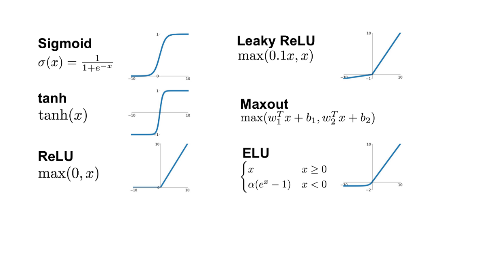

Las redes neuronales, en su concepto más sencillo, son un conjunto de unidades llamadas neuronas artificiales que se conectan entre sí mediante enlaces. Dichos enlaces, tienen un valor conocido como peso, que modifica el estado de activación de las neuronas adyacentes. Una vez se tiene el valor de peso, se procesa en la neurona siguiendo, por ejemplo, una función limitadora que puede imponer un límite para que se pueda propagar el valor, u otra que lo que hace es modificar el valor del resultado. Esto es lo que se conoce como función de activación. En general, las redes neuronales se componen de tres niveles o capas, comenzando por la capa de entrada, donde se introducen los datos reales sobre los que va a trabajar la red. Posteriormente tenemos la capa oculta, compuesta por varias columnas o subcapas de neuronas encargadas de procesar la información. Finalmente, la capa de salida nos devuelve la predicción calculada. Para tratar problemas más complejos, necesitaremos construir redes más amplias añadiendo más capas ocultas. Si bien es cierto que este modelo está inspirado en el cerebro humano, es completamente distinto al aprendizaje del ser humano.
Para entrenar la red neuronal, se ajustan los pesos de los enlaces hasta que se obtiene un resultado esperado. Para ello se emplea un volumen de datos determinado que se etiqueta, favoreciendo a que la red reconozca las características comunes de dichos datos. Posteriormente, se pone en práctica con datos sin etiquetar, con el objetivo de que sea capaz de reconocer dichas características. Existen varios algoritmos de entrenamiento para ello, aunque el más utilizado es backpropagation.
Este algoritmo consiste en ejecutar la red neuronal con pesos aleatorios y procesar información hasta obtener un resultado. El resultado obtenido se compara con el resultado esperado y se obtiene un error. Dicho error se transmite, esta vez de manera inversa, hacia todas las capas ocultas. El error se recalcula para cada una de las neuronas de forma fraccional, n función de lo que haya contribuido al error final. De esta manera, cada neurona recalcula el peso de su enlace. Es un proceso iterativo y se repite hasta que los pesos sean los adecuados para obtener el resultado correcto. Cada vuelta del algoritmo se conoce técnicamente como generación. El concepto de este algoritmo se centra en que las neuronas aprendan a reconocer durante las iteraciones, las distintas características de los datos de entrada. Esto permite que, tras el entrenamiento, al poner en práctica la red, sea capaz de reconocer los patrones incluso cuando los datos de entrada contienen ruido o están incompletos.
Ejemplo modelo para el reconocimiento de números escritos a mano entrenado mediante backpropagation. Como se observa, el número se escribe y se guarda en una imagen comprimida de 28x28 píxeles. Al multiplicarlo tendremos 784 que serán las neuronas necesarias en la capa de entrada. De la misma manera, el número está entre el 0 y el 9 luego tendremos 10 neuronas en la capa de salida, cuyos valores solo serán 1 o 0 en función de si el modelo predice que es ese número o no.
El proceso de introducir datos de entrada, transmitirlos a todas las neuronas, y procesarlos mediante pesos y funciones hasta la salida, se conoce como forward propagation. A continuación se muestra un ejemplo visual.
Antes hemos mencionado las funciones de activación. Realmente su propósito dentro de una red neuronal no es más que decidir si la neurona está activada mediante el umbral de activación establecido por la misma función. Existen varias, aunque las más utilizadas son la función sigmoide, la función tangente hiperbólica, la función relU y la función Leaky relU. Para cada aplicación se usa una diferente y se escoge la que mejor se ajuste en base a distintos criterios. En la siguiente imagen se muestran algunas de las funciones más utilizadas. 
Finalmente, en una red neuronal siempre obtendremos dos funciones. Por un lado, la función de pérdida mide el error de salida durante cada iteración, mientras que la función de costo calcula la media de las funciones de pérdida de todas las iteraciones para obtener un coste global. El objetivo del entrenamiento en una red neuronal es minimizar dichas funciones mediante algoritmos de optimización como el gradiente de descenso, que busca el mínimo local en una función.
Ejemplo del funcionamiento del gradiente de descenso
Además de las aplicaciones ya explicadas, tiene muchas otras. Uno de los mayores campos donde se utiliza es en la neurociencia, que trata el sistema nervioso. Concretamente, se utiliza para crear modelos de sistemas neuronales biológicos para poder comprenderlos. Esto es gracias a que las redes neuronales artificiales se parecen a las humanas, por lo que se puede sacar una relación entre los datos de esa red y cómo podría funcionar una red real. Uno de los estudios más elaborados en esta área es la creación de redes con memoria gracias a componentes externos, gracias a sistemas como las Máquinas de Turing neuronales, desarrolladas por DeepMind. Aquí, se utilizan técnicas de Deep Learning para “crear” esa memoria. También está la memoria a largo plazo, que se usa en predicciones, incluyendo la búsqueda de respuestas. Por supuesto, las redes neuronales tienen más usos, entre los que se incluye la aproximación de funciones, la clasificación y reconocimiento de patrones, el procesamiento de datos así como en la ingeniería de control. Pese a que este campo ha avanzado mucho en los últimos años, aún hay mucho trabajo por hacer. Actualmente, uno de los muchos objetivos dentro del campo es el de superar una de las grandes barreras de la humanidad: el lenguaje, mediante el desarrollo de un traductor rápido y fiable de prácticamente todas las lenguas del mundo.